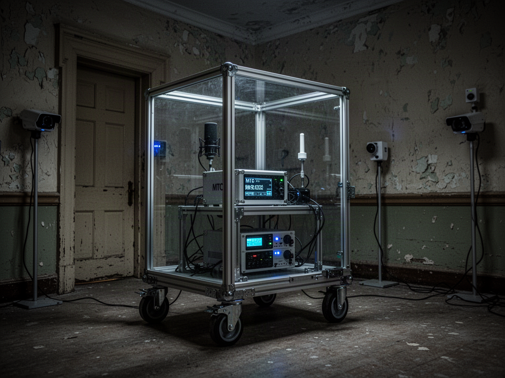

Research question
Can candidate Electronic Voice Phenomena be recorded independently of a person hearing or suggesting phrases in real time?
MTC is designed primarily to test whether EVP-like recorded results occur when NO human observer is present in the monitored test area during acquisition.

Can candidate Electronic Voice Phenomena be recorded independently of a person hearing or suggesting phrases in real time?
Establish acoustic and environmental baselines; clear the monitored test area; capture unattended, synchronized audio and video; preserve originals; use blinded post-session listening and matched control sessions.
Investigate external voices, HVAC, plumbing, radio interference, recorder self-noise, digital artifacts and the influence of suggested words on reviewers.
An apparent phrase is a candidate event for controlled retesting, not evidence by itself of a paranormal source.
These are requirements and decision criteria to develop—not completed validation or an indication that all four gates have been passed.
Previous EVP and ITC work used blinded controls, including Boccuzzi and Beischel (2011). Its limitations and null findings must be addressed.
Audio recording and human speech perception are established; a paranormal EVP source is not. AI transcription can falsely recognize words in noise.
Preregister event thresholds and compare unattended recordings to equipment-only and matched controls, with independent blind listener judgments and agreement statistics.
If candidate event rates and listener agreement fail to exceed matched controls, report that result and stop implying a distinct anomalous source.
VEIL’s planned instruments share a common emphasis: synchronized measurement, rigorous controls, raw evidence preservation and transparent review.
Contact · Collaborate · Support →